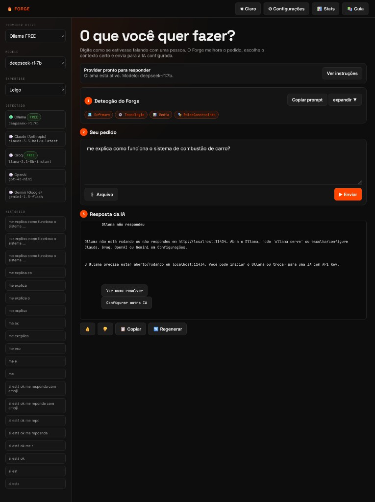

O engenheiro de prompt que roda na sua máquina, aprende com você e entrega para qualquer IA o briefing perfeito — de uma palavra só.
IAs como Claude, GPT e Gemini são extraordinárias. Mas elas respondem ao que você diz — não ao que você quer dizer. Um prompt vago gera uma resposta vaga. Um prompt de engenheiro sênior gera um resultado profissional.
O problema: prompt engineering é uma habilidade. Levou anos para ser desenvolvida. E o resultado fica na cabeça de quem aprendeu — não na ferramenta.
Forge nasceu de uma pergunta simples: e se o conhecimento de prompt engineering ficasse na máquina, aprendesse com o usuário, e fosse aplicado automaticamente para qualquer IA — sem custo, sem nuvem, sem fricção?
Escrito em Rust porque velocidade e eficiência de memória importam quando você processa cada mensagem antes de enviar. O pipeline inteiro roda em menos de 1ms. O resto do tempo é latência de rede — não de Forge.
Antes de usar o Forge de verdade, a pessoa ou empresa gera um DNA próprio. Esse DNA conecta nome, contato e identidade de uso para personalizar prompts, histórico, onboarding e futuras automações. Também vira um lead qualificado para acompanhamento.
O DNA Forge não é senha. É uma assinatura pública de onboarding para identificar quem gerou o acesso inicial.
Cada mensagem que você digita passa por um pipeline determinístico antes de chegar em qualquer IA. Nenhuma chamada de rede. Nenhum modelo local pesado. Só algoritmos em Rust.
Forge não tem parâmetros fixos. Cada resposta que você aprova, cada vez que você pede "mais técnico" ou "mais curto", cada padrão no seu vocabulário — tudo ajusta o perfil silenciosamente.
Detectando seu sistema operacional...
Instala automaticamente: Rust · Ollama · modelo de IA adequado ao seu hardware · Forge
ou escolha manualmente:
Toolchain oficial — um comando, funciona em Ubuntu, Debian, Fedora, Arch.
Build tools, OpenSSL e SQLite.
Build leva 3–5 min na primeira vez. Após isso, <10s.
Se ainda não tem WSL2 instalado no Windows.
Siga exatamente os mesmos passos do Linux acima. O WSL2 expõe localhost automaticamente para o Windows.
Necessário para compilar dependências nativas. Funciona em Intel e Apple Silicon (M1/M2/M3).
Necessário o Visual Studio Build Tools para compilar código nativo.
💡 Recomendamos WSL2 no Windows para melhor compatibilidade.
A forma mais rápida de rodar. Não precisa instalar Rust.
O Forge roda em localhost:3000,
detecta providers como Ollama, mostra o prompt engineered e conduz o usuário com uma experiência visual simples.

| Feature | ChatGPT | Claude.ai | Cursor | LangChain | FORGE |
|---|---|---|---|---|---|
| Prompt engineering automático | — | — | só código | — | qualquer domínio |
| Aprende seu perfil | — | — | parcial | — | ✓ adaptativo |
| Parâmetros que evoluem | — | — | — | — | ✓ momentum |
| Roda 100% local | — | — | — | parcial | ✓ offline |
| Suporte multimodal | ✓ | ✓ | — | ✓ | ✓ orquestrado |
| Qualquer IA (multi-provider) | — | — | parcial | ✓ | ✓ |
| Resolve "me surpreenda" | na IA | na IA | — | — | ✓ antes da IA |
| RAM idle | browser | browser | ~400MB | ~200MB | ~8MB |
| Gratuito e open source | pago | pago | pago | ✓ | ✓ MIT |
Open source, local, gratuito. Nenhum dado seu sai da máquina. Começa com uma linha de código.